01 / GAME
游戏用艺术与规则重新定义游玩
游戏不是单一专业，而是一套由规则、技术与视觉共同建立的互动系统。当规则成为体验、技术承载想象、视觉赋予世界形态，游戏便成为一种能够被进入、探索与回应的当代媒介。
01 / GAME
游戏不是单一专业，而是一套由规则、技术与视觉共同建立的互动系统。当规则成为体验、技术承载想象、视觉赋予世界形态，游戏便成为一种能够被进入、探索与回应的当代媒介。
01 / INDUSTRY CONTEXT
技术进步、互动娱乐需求与数字设备普及，让游戏成为连接内容、软件、视觉艺术和用户体验的综合产业。移动端、主机与 PC 共同发展，VR / AR、电竞、直播和生成式 AI 也不断扩展人才可以进入的工作场景。
游戏和动画产业在图形技术、交互设备和全球内容消费的推动下持续增长。画面从二维走向实时三维，设备从单一终端扩展到手机、主机、PC 与沉浸设备，项目生产因此需要更复杂的专业协作。
电竞、直播和社区内容让游戏的生命周期不再止于“开发完成并上线”。持续运营、用户研究、赛事内容、虚拟制作和跨媒体开发，正在创造新的岗位接口。
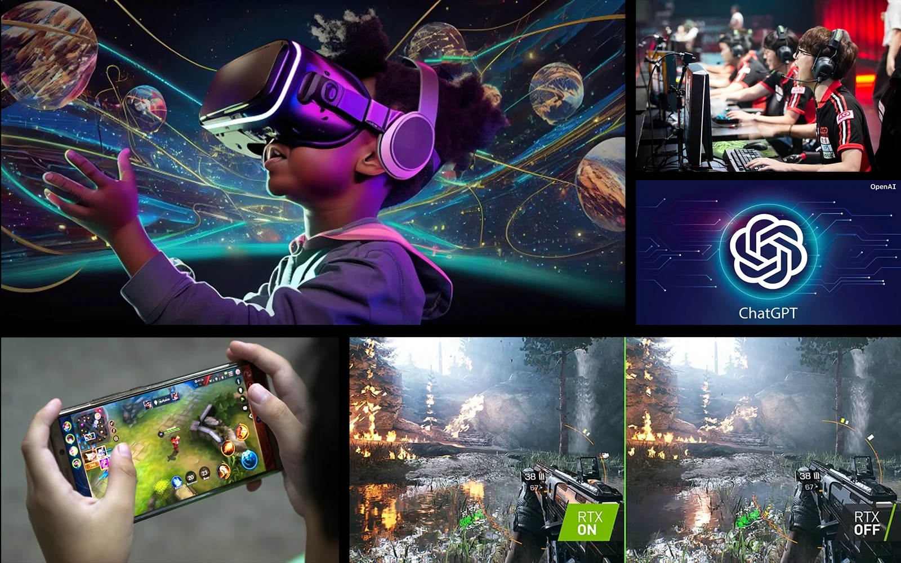
2025 年中国自主研发游戏海外市场实际销售收入
中国自研游戏海外收入在整体业绩中的占比已经接近三分之一
中国自研游戏海外销售继续保持增长
全球收入前十的移动游戏中，中国游戏占据四席
数据来源：中国音像与数字出版协会《2025年中国游戏产业报告》与 AppMagic《Mobile Market Landscape 2026》。统计口径与排名会随时间变化。
02 / PRODUCTION PIPELINE
制作人协调目标与资源，机制创意定义玩家体验，编程开发让系统运行，艺术设计建立世界的视觉规则。三个体系在同一项目中持续协作，并共同对最终的玩家体验负责。
DESIGN & PLANNING
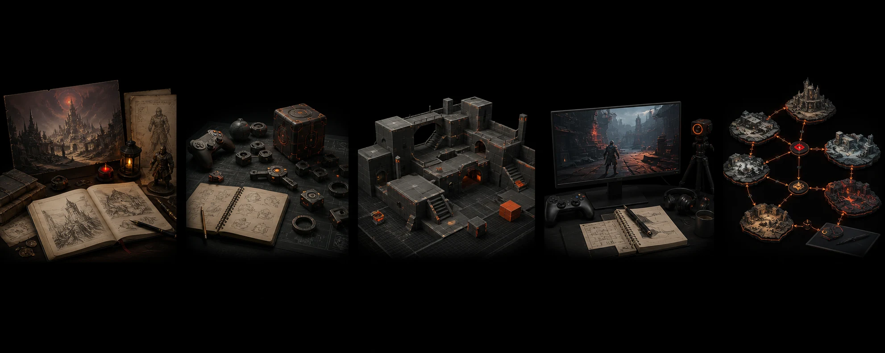
| 细分岗位 | 工作内容 | 对应海外院校与课程 |
|---|---|---|
| 系统策划 | 负责设计经济系统、数值结构、成长系统、战斗机制等整体玩法框架。 |
|
| 关卡策划 | 负责关卡搭建、地形编辑、怪物与资源配置、节奏设计，确保游戏流程体验良好。 | |
| 数值策划 | 构建游戏成长体系、战斗计算公式、资源产出与消耗平衡。 | |
| 文案 / 剧情策划 | 世界观搭建、角色设定、剧情文本、任务对白和情节节点设计。 |
ART & VISUAL DEVELOPMENT
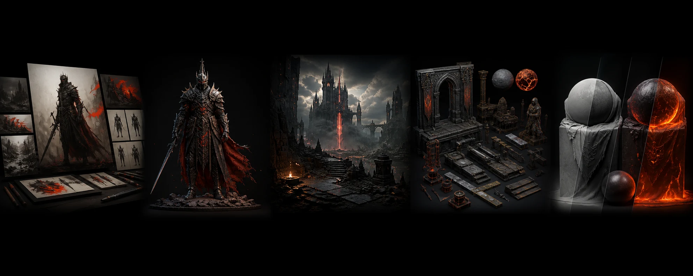
| 细分岗位 | 工作内容 | 对应海外院校与课程 |
|---|---|---|
| 原画设计师 角色 / 场景 / 道具 | 设计角色、场景、道具的风格与设定，为 3D 制作提供明确的设计稿。 |
|
| 概念设计师 | 用于氛围图、宣传图、场景结构和世界观视觉探索。 | |
| UI / UX 设计师 | 界面布局、交互流程、UI 图标与系统界面视觉设计。 | |
| 3D 角色建模师 | 创建游戏角色模型、雕刻细节、制作 PBR 贴图，保证拓扑与风格统一。 |
|
| 3D 动画师 角色 / 战斗 / 动作 | 制作走、跑、跳、攻击与表演动作，或基于动作捕捉进行二次修改。 | |
| 技术美术 | 解决美术与程序之间的技术问题，制作材质与工具并优化性能。 |
PROGRAMMING & TECHNOLOGY
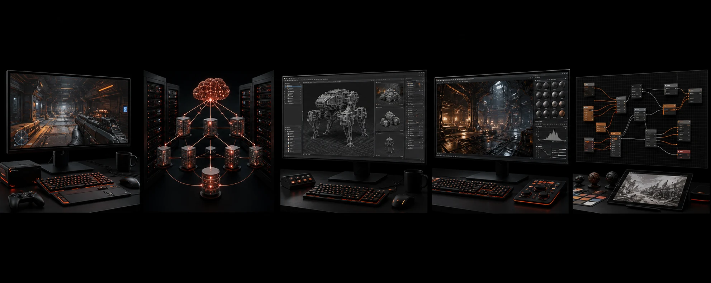
| 细分岗位 | 工作内容 | 对应海外院校与课程 |
|---|---|---|
| 客户端开发 | 负责玩法、UI、动画、性能优化和游戏落地开发。 |
|
| 游戏服务端工程师 | 负责玩家数据、战斗系统、活动运营和高并发处理。 | |
| 游戏引擎开发工程师 | 研发引擎、优化渲染并开发底层系统。 | |
| 技术美术 | 解决美术与程序之间的技术问题，制作材质与工具并优化性能。 | |
| 服务端架构师 | 负责高并发架构设计、服务治理与全局技术规划。 |
03 / COMPANY STRUCTURE
大型项目强调细分岗位与稳定管线，小型团队则更看重一人多能、快速协作和完整落地能力。同一个“游戏设计”专业，在不同团队中可能对应完全不同的工作方式。
规模化产品、成熟管线、职责细分与跨部门协作。
围绕品类和项目组形成设计、美术、技术与运营团队。
小团队高密度协作，强调创意辨识度和综合制作能力。
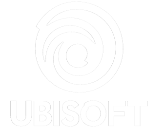
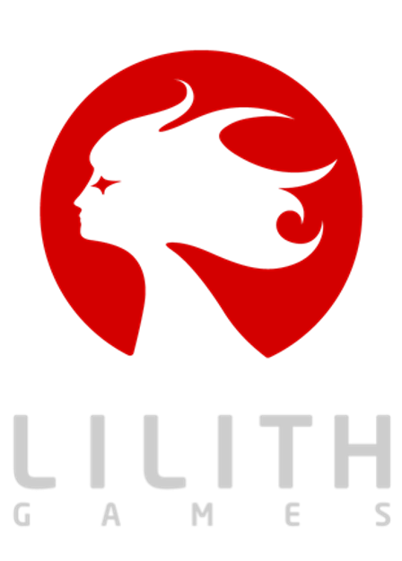
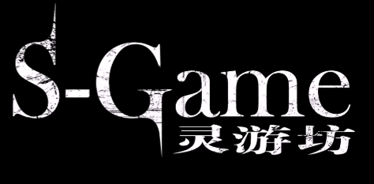
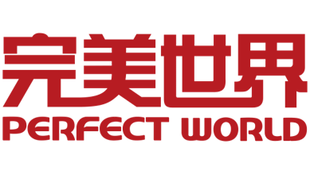
大型商业课程通常把学生分入设计、美术、程序和制作岗位，共同完成复杂游戏。评估重点不只是成片，还包括版本管理、沟通文档、测试记录与个人贡献。
独立创作课程则可能要求一名学生同时承担多种角色。它更适合希望掌握完整创作链路的人，但作品集仍需要清楚说明自己真正擅长的能力。
04 / GLOBAL LANDSCAPE
学习游戏专业，不应只参考 QS、U.S. News 等综合排名。各国教育体系与本地游戏产业生态相互影响，由此形成不同的课程方向、培养方式与行业特点。
综合设计、商业开发、交互媒体和实验实践并存，课程通常强调跨专业团队、用户测试和可玩的完整原型。
USC · NYU · Carnegie Mellon · SMU · University of Utah · DigiPen · SCAD · RIT · DePaul
Rockstar Games · Epic Games · Valve · Naughty Dog · Activision Blizzard · Riot Games · Electronic Arts
Game Design · Interactive Media · Game Development · Entertainment Technology · Game Programming
游戏艺术、设计、技术和研究型课程层次丰富，适合从明确岗位训练到实验游戏的多种路径。
UCL · Goldsmiths · UAL · Teesside · Abertay · Staffordshire · Bournemouth · Hertfordshire · Kingston
Creative Assembly · Rockstar North · Supermassive Games · Frontier · Jagex · Codemasters · Sumo Digital
Games Design · Game Art · Technical Art · Games Programming · Immersive Media
视觉文化、角色表达、作者性和本土产业联系紧密，部分课程更重视个人创作方法与独特审美。
东京工艺大学 · 京都精华大学 · 京都艺术大学 · 大阪艺术大学 · 多摩美术大学 · 武藏野美术大学
Nintendo · Sony Interactive Entertainment · Capcom · Bandai Namco · Square Enix · FromSoftware · SEGA
游戏创作 · 角色设计 · 媒体艺术 · 互动表达 · 信息设计
强调高完成度制作、团队协作和行业管线，视觉开发与实时制作联系紧密。
Gobelins · Rubika · ISART Digital · Cnam-Enjmin
Ubisoft · Quantic Dream · DON'T NOD · Arkane Studios · Amplitude Studios
Game Art · Game Design · Digital Production · Technical Direction
独立游戏、严肃游戏、用户研究与跨学科实践突出，课程常把游戏放入更广泛的社会和文化语境。
Aalto University · University of Skövde · The Animation Workshop / VIA · IT University of Copenhagen
Remedy · DICE · Paradox Interactive · Supercell · Rovio · IO Interactive · Unity
Game Design · Serious Games · Games UX · Digital Narration · Visual Game and Media Design
动画、游戏制作与创意技术产业连接明显，实践型课程重视作品完成度与团队协作。
Sheridan College · Emily Carr University · Vancouver Film School · University of British Columbia
Ubisoft Montréal / Toronto · EA Vancouver · BioWare · Behaviour Interactive · Digital Extremes · Relic
Game Design · Game Art · 3D Animation · Interactive Arts · Technical Production
数字媒体、游戏开发和实践教育结合，课程覆盖三维制作、交互设计与实时技术。
RMIT · University of Melbourne · Media Design School · Queensland University of Technology
Wētā FX · Halfbrick Studios · League of Geeks · Mighty Kingdom · Grinding Gear Games
Game Design · Digital Media · Creative Technologies · 3D Animation
数字内容、视觉设计与成熟游戏产业生态相互支持，在线游戏和角色内容产业影响明显。
世宗大学 · 中央大学 · 弘益大学 · 东国大学 · 韩国艺术综合大学
Nexon · NCSoft · Krafton · Smilegate · Pearl Abyss · Netmarble · Bluehole
Game Design · Digital Contents · Visual Communication · Interactive Media
05 / CURRICULUM MODELS
作为新兴媒介，游戏已在技术、创作与体验设计等领域延伸出多种课程方向。这些课程的名称未必直接出现“游戏”一词，却共同回应游戏制作与交互体验的发展。
以成熟开发管线为基础，学生在设计、美术、程序等岗位中分工，完成规模较大的可玩项目。课程重视软件能力、行业标准、版本管理与交付。
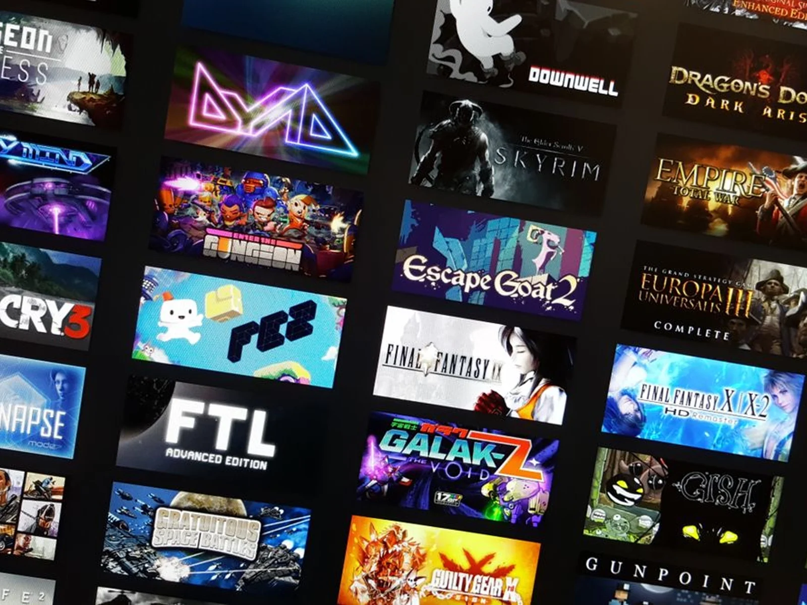
以小团队或个人创作为核心，强调创意辨识度、作者表达与从概念到成品的完整控制。学生经常需要跨越设计、美术和基础开发边界。
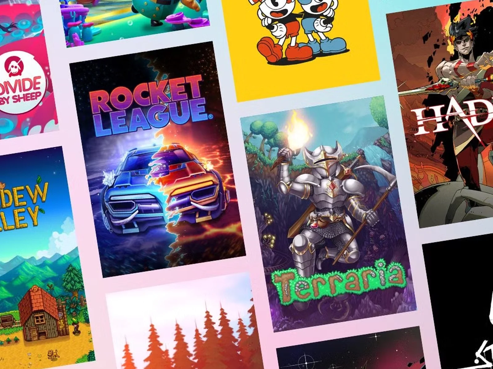
把游戏机制应用于教育、训练、健康、文化遗产和社会议题。项目需要同时证明问题研究、用户需求与交互方案之间的关系。
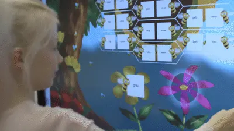
结合 VR / AR、空间计算、交互装置和实时引擎，研究身体、空间和数字内容之间的关系。课程往往横跨设计、技术与影像。
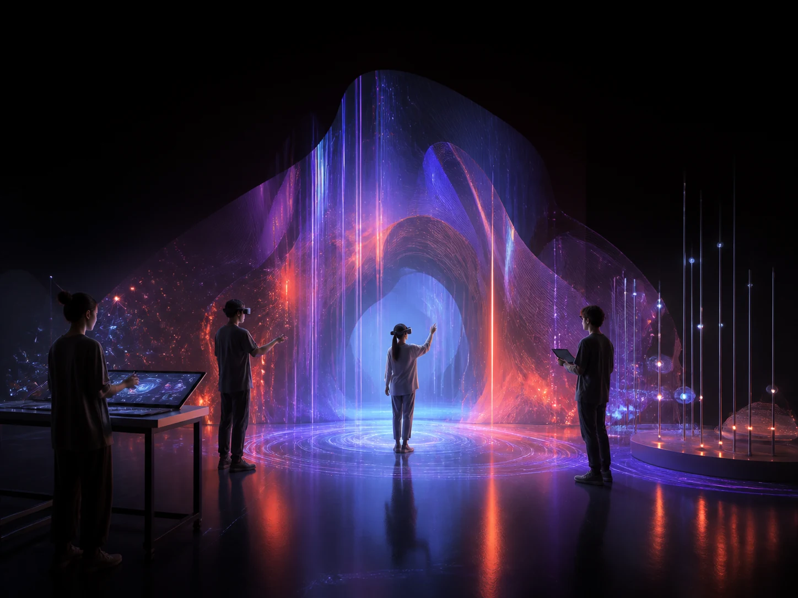
探索新的交互、叙事、视觉和游戏形式，把游戏当作艺术与研究媒介。完成度之外，课程更关注问题意识、实验方法和反思能力。
注：实验游戏多见于部分顶尖大学的课程体系中，通常作为专题或选修课程设置，而非独立专业方向。
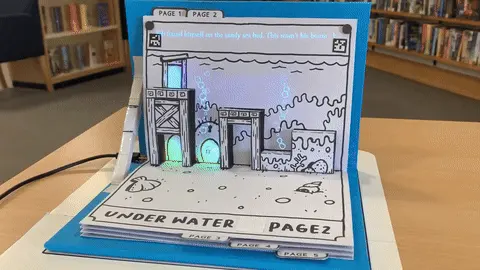
| 培养模式 | 主要目标 | 典型协作 | 常见产出 | 作品集重点 |
|---|---|---|---|---|
| 商业游戏 | 进入成熟研发团队 | 多人、岗位细分 | 完整可玩项目与专业资产 | 岗位能力、管线与个人贡献 |
| 独立游戏 | 建立作者表达 | 个人或小团队 | 完整独立游戏 | 核心概念、迭代与整体体验 |
| 严肃游戏 | 解决真实问题 | 跨学科团队 | 教育、训练或社会创新原型 | 研究、用户验证与设计逻辑 |
| 沉浸媒体 | 探索空间交互 | 设计＋技术＋影像 | VR / AR 或互动装置 | 空间体验、技术选择与测试 |
| 实验游戏 | 拓展媒介边界 | 个人研究或小组实验 | 实验玩法、叙事或装置 | 观点、方法与批判性反思 |
06 / HOW TO CHOOSE
真正有效的选课不是从学校榜单开始，而是从希望成为怎样的创作者、进入怎样的团队，以及作品集需要证明什么开始。
适合目标岗位较明确，希望通过专业分工和复杂团队项目进入游戏行业的学生。申请前应先确定设计、美术或程序分支，并让作品集呈现岗位匹配度。
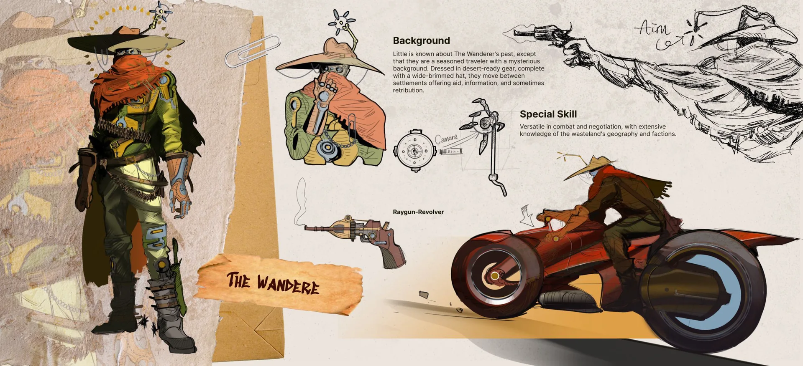
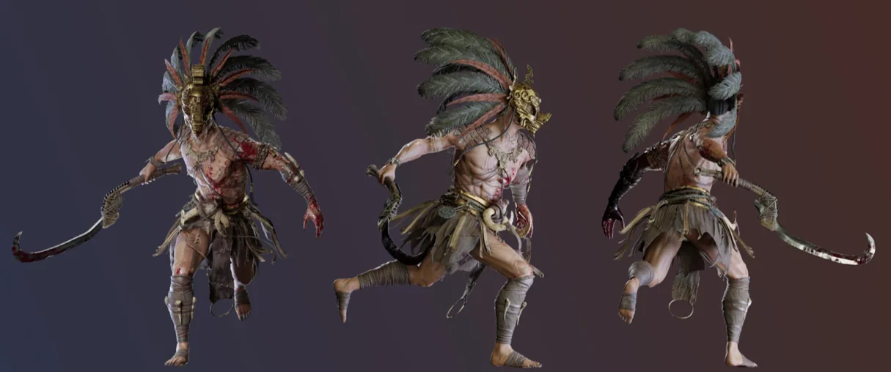
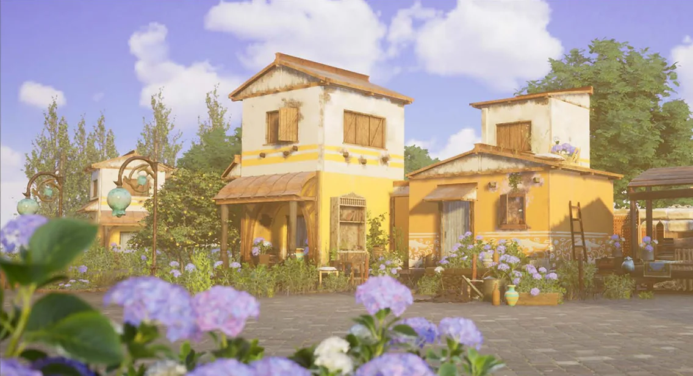
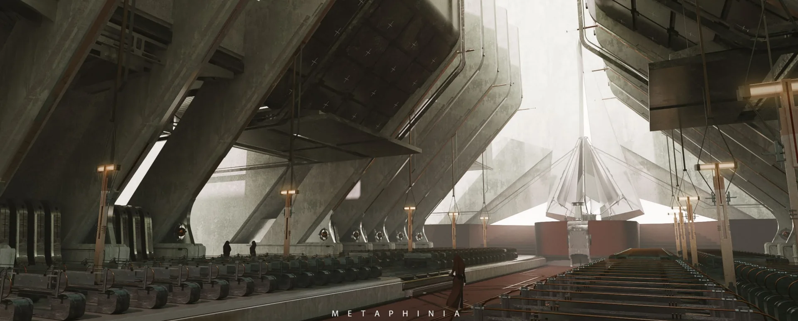
适合希望探索独立或实验游戏，并发展创作方法、研究能力和项目领导力的学生。作品不只展示结果，也要呈现问题、方法、测试和迭代。
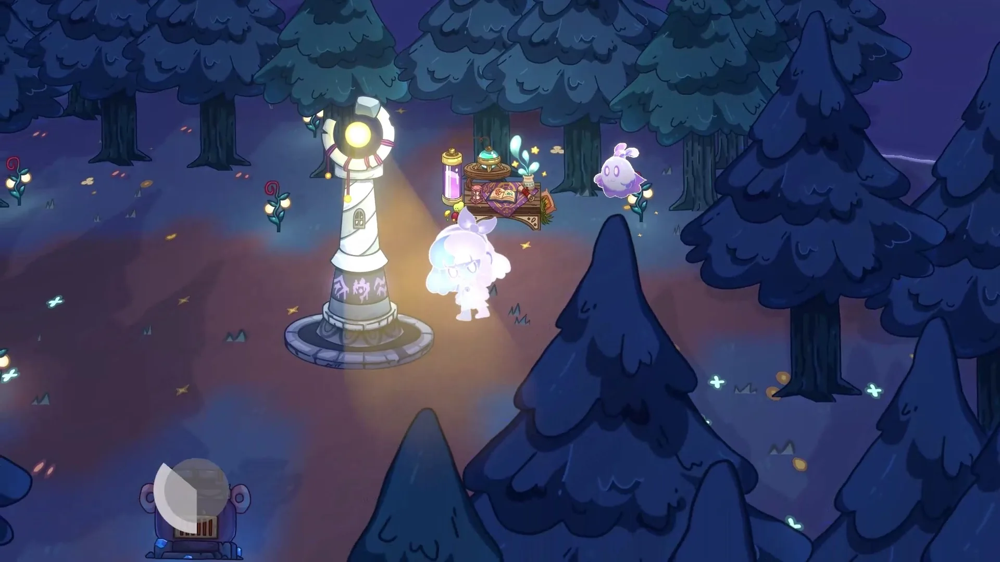
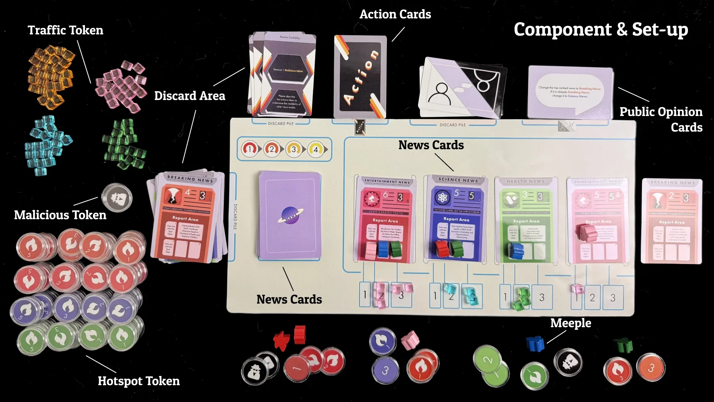
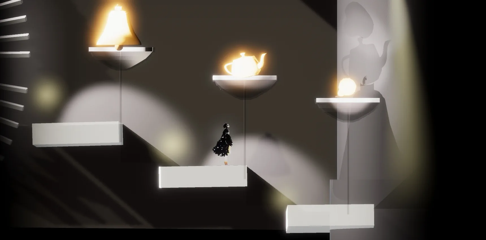
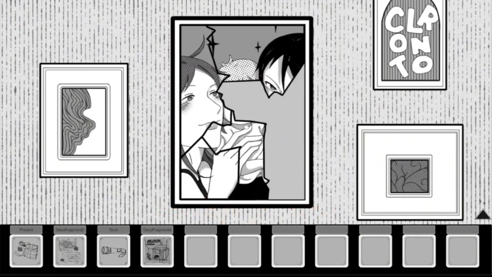
适合把游戏作为研究或创新媒介，并希望连接计算机、设计、社会科学、教育或健康领域的学生。游戏作品需要服务于明确的研究主题。
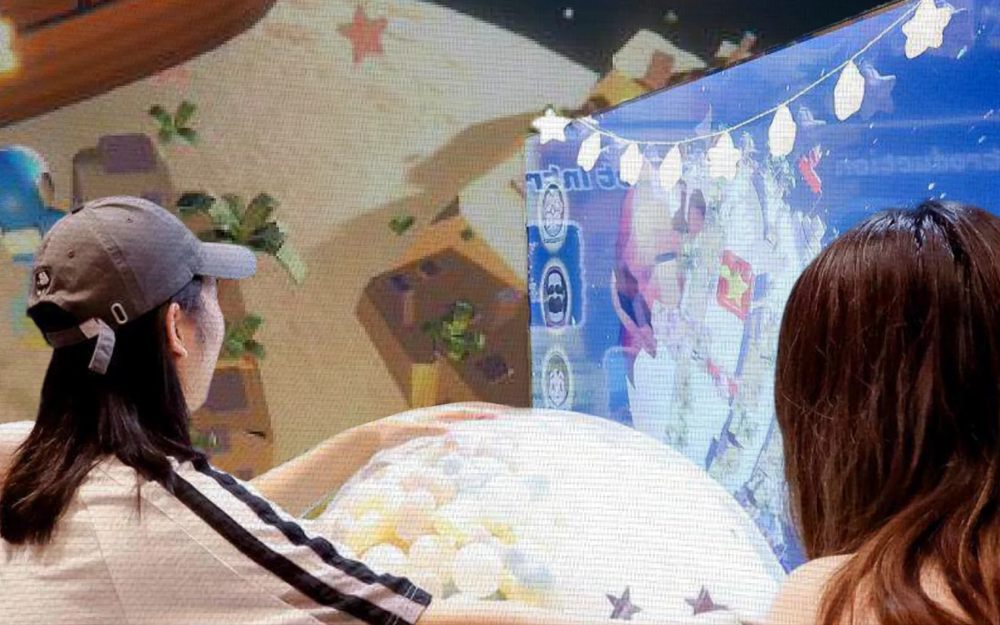
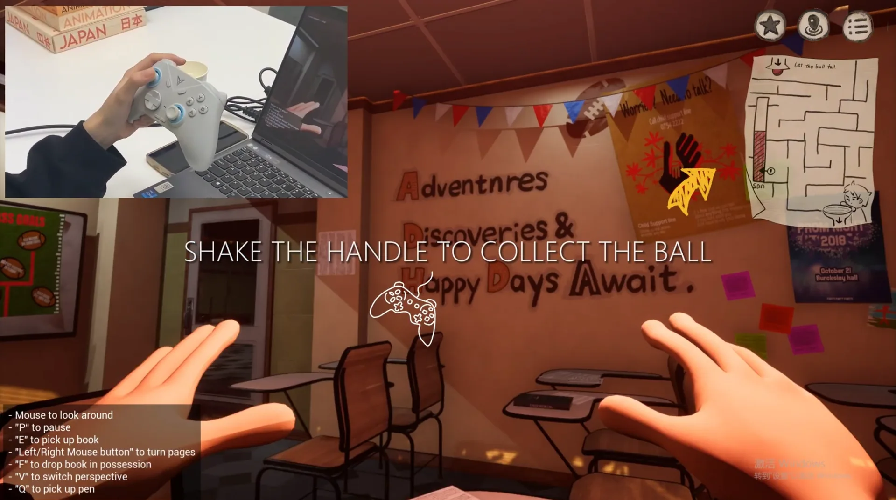
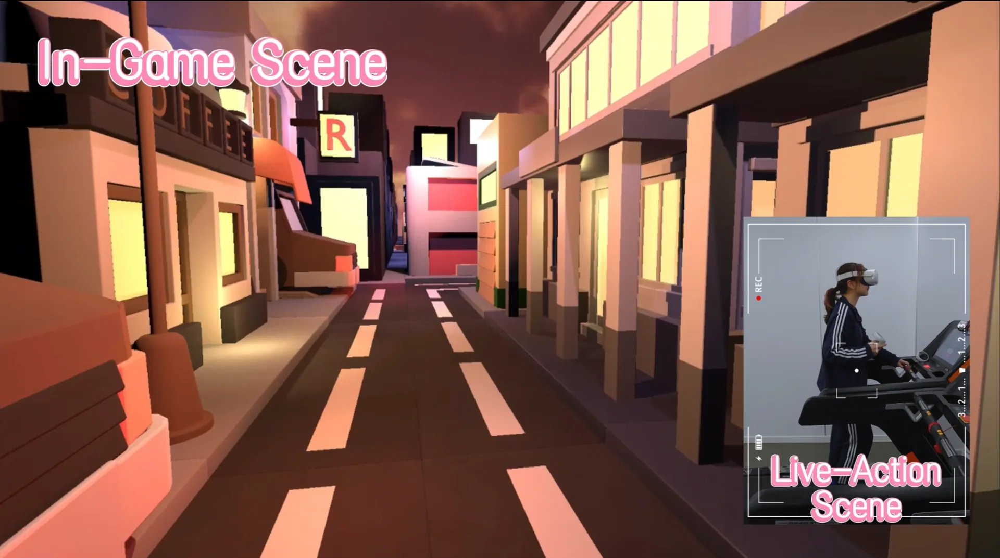
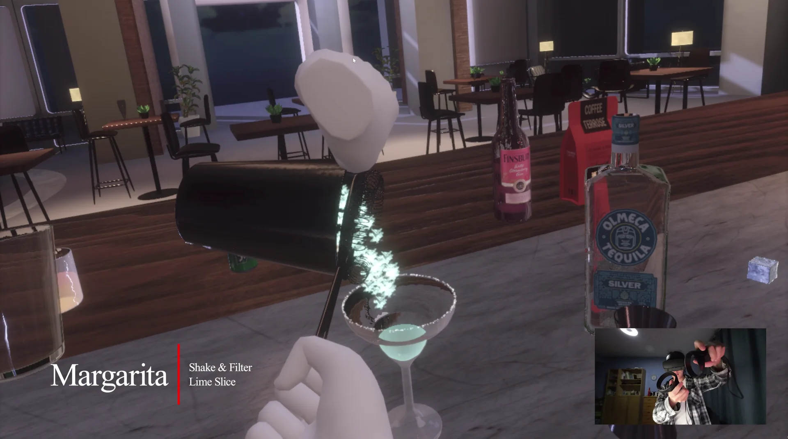
BEFORE YOU APPLY